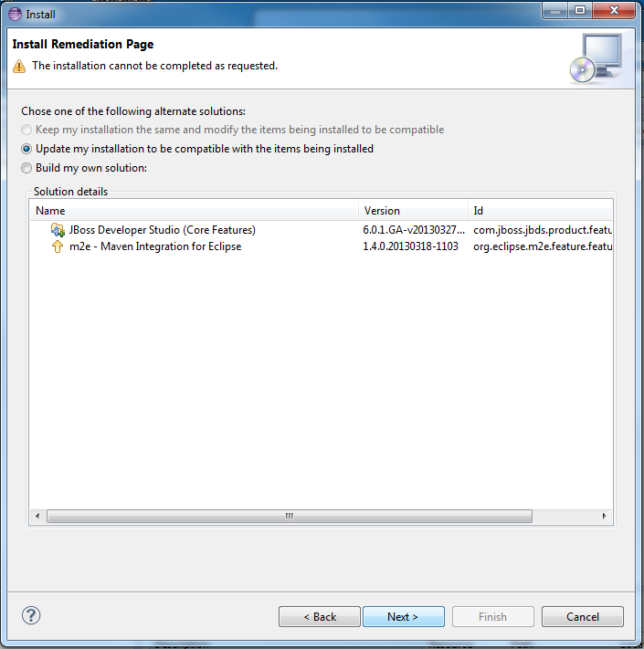

This API is comprised of two basic concepts:
The user interface model: The content of this model describes the structure of the user interface. The Eclipse Platform reacts to changes in this model by updating the presentation, and the complete model is now available through the new API.
Note that the model represents everything on the screen and these elements can be modified by your code (see the example below).
IEclipseContext / Dependency Injection (DI): Contexts are containers of UI runtime state including all the available services. The typical Eclipse Platform 4 pattern is that contributions are created and configured through dependency injection based on state and services found in the local context for that model element.
Here are a few links to more information about the UI Model, the services and DI (the Javadoc and supporting Eclipse documentation will be available before Kepler is released):
There is quite a lot of information already available for Eclipse Platform 4. While parts of the API are just being formalized now, most of the concepts and API existed in provisional form in previous Eclipse 4 releases.
Just to give a taste of what working in a modeled UI is all about, here's a code snippet showing how to get a 'standard' Command handler to toggle the visibility of the 'Quick Access' text field that appears in the top trim. First we gain access to the model by getting the MApplication as a 'service'. Form there we can access the EModelService and use it to find the model element representing the search in the UI. Then it's just a simple matter of toggling the element's 'toBeRendered' flag to get it to (dis)appear.
public Object execute(ExecutionEvent event) throws ExecutionException {
IWorkbenchWindow window = HandlerUtil.getActiveWorkbenchWindowChecked(event);
MApplication theApp = (MApplication) window.getService(MApplication.class);
MWindow activeWin = theApp.getSelectedElement();
EModelService ms = activeWin.getContext().get(EModelService.class);
EPartService ps = activeWin.getContext().get(EPartService.class);
MToolControl search = (MToolControl) ms.find("SearchField", activeWin);
if (search != null) {
search.setToBeRendered(!search.isToBeRendered());
window.getShell().layout(true, true);
}
return null;
}

The picture below shows a screenshot of this page in action. In this particular case the user is trying to install something that is conflicting with what is installed, and the wizard gives the option to update what is installed so that the installation can proceed.

.class literal or you want to invoke a static method?
Now, rather than deleting all the arguments manually,
you can just delete the '<' and that will remove the entire text up to '>'.

;' will be appended at the end of the method invocation.

@Ignored tests and tests that didn't meet
an assumption as "skipped' tests. The skipped tests also got new icons, and
tests with an assumption failure no longer get the 'passed' checkmark.


This menu now remembers which application was launched most recently and puts it at the top of the list. The most recent choice will be launched if the run button is pressed. The order is saved between workbench restarts.
org.eclipse.ui bundle to
hook into the workbench lifecycle.

An OSGi runtime is required to do the conversion. Tasks run using Eclipse AntRunner or the API Use Report external tools launch configuration can convert the plug-ins. Tasks run from the command line Ant runner will skip pre-OSGi plug-ins.
@noreference Javadoc tag on types (classes, interfaces,
annotations and enums).

Placing this tag restricts the API so that any reference to that type or its members will be flagged as invalid API use.

To mark a type in an API package as not being API, tag it as @noreference,
@noextend and @noinstantiate (or @noimplement). This ensures that
no client can access it via valid API and the type could later be removed.

Tag validation is turned off by default. To turn it on for your API Tools enabled project, open
Project Properties > Plug-in Development > API Errors/Warnings. Set
API Use > General > Unsupported use of API Javadoc tags to Warning or Error.